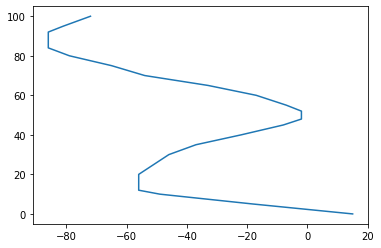
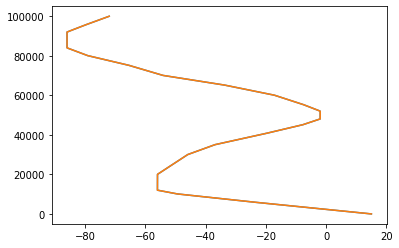
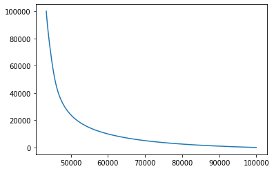
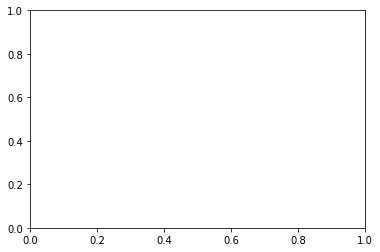

<?xml version="1.0" encoding="utf-8"?>
<!DOCTYPE html PUBLIC "-//W3C//DTD XHTML 1.0 Strict//EN"
"http://www.w3.org/TR/xhtml1/DTD/xhtml1-strict.dtd">
<html xmlns="http://www.w3.org/1999/xhtml" lang="en" xml:lang="en">
<head>
<!-- 2023-02-23 jeu. 02:03 -->
<meta http-equiv="Content-Type" content="text/html;charset=utf-8" />
<meta name="viewport" content="width=device-width, initial-scale=1" />
<title>Structure Thermique de l'atmopshère</title>
<meta name="generator" content="Org mode" />
<meta name="author" content="Thomas Lebrat" />
<link rel="stylesheet" type="text/css" href="https://fniessen.github.io/org-html-themes/src/readtheorg_theme/css/htmlize.css"/>
<link rel="stylesheet" type="text/css" href="https://fniessen.github.io/org-html-themes/src/readtheorg_theme/css/readtheorg.css"/>
<script src="https://ajax.googleapis.com/ajax/libs/jquery/2.1.3/jquery.min.js"></script>
<script src="https://maxcdn.bootstrapcdn.com/bootstrap/3.3.4/js/bootstrap.min.js"></script>
<script type="text/javascript" src="https://fniessen.github.io/org-html-themes/src/lib/js/jquery.stickytableheaders.min.js"></script>
<script type="text/javascript" src="https://fniessen.github.io/org-html-themes/src/readtheorg_theme/js/readtheorg.js"></script>
<script type="text/javascript">
/*
@licstart  The following is the entire license notice for the
JavaScript code in this tag.

Copyright (C) 2012-2019 Free Software Foundation, Inc.

The JavaScript code in this tag is free software: you can
redistribute it and/or modify it under the terms of the GNU
General Public License (GNU GPL) as published by the Free Software
Foundation, either version 3 of the License, or (at your option)
any later version.  The code is distributed WITHOUT ANY WARRANTY;
without even the implied warranty of MERCHANTABILITY or FITNESS
FOR A PARTICULAR PURPOSE.  See the GNU GPL for more details.

As additional permission under GNU GPL version 3 section 7, you
may distribute non-source (e.g., minimized or compacted) forms of
that code without the copy of the GNU GPL normally required by
section 4, provided you include this license notice and a URL
through which recipients can access the Corresponding Source.


@licend  The above is the entire license notice
for the JavaScript code in this tag.
*/
<!--/*--><![CDATA[/*><!--*/
 function CodeHighlightOn(elem, id)
 {
   var target = document.getElementById(id);
   if(null != target) {
     elem.cacheClassElem = elem.className;
     elem.cacheClassTarget = target.className;
     target.className = "code-highlighted";
     elem.className   = "code-highlighted";
   }
 }
 function CodeHighlightOff(elem, id)
 {
   var target = document.getElementById(id);
   if(elem.cacheClassElem)
     elem.className = elem.cacheClassElem;
   if(elem.cacheClassTarget)
     target.className = elem.cacheClassTarget;
 }
/*]]>*///-->
</script>
<script type="text/x-mathjax-config">
    MathJax.Hub.Config({
        displayAlign: "center",
        displayIndent: "0em",

        "HTML-CSS": { scale: 100,
                        linebreaks: { automatic: "false" },
                        webFont: "TeX"
                       },
        SVG: {scale: 100,
              linebreaks: { automatic: "false" },
              font: "TeX"},
        NativeMML: {scale: 100},
        TeX: { equationNumbers: {autoNumber: "AMS"},
               MultLineWidth: "85%",
               TagSide: "right",
               TagIndent: ".8em"
             }
});
</script>
<script type="text/javascript"
        src="https://cdnjs.cloudflare.com/ajax/libs/mathjax/2.7.0/MathJax.js?config=TeX-AMS_HTML"></script>
</head>
<body>
<div id="content">
<h1 class="title">Structure Thermique de l'atmopshère</h1>
<div id="table-of-contents">
<h2>Table of Contents</h2>
<div id="text-table-of-contents">
<ul>
<li><a href="#org7cea1b0">1. Introduction</a>
<ul>
<li><a href="#org5b9bacd">1.1. Objectifs de l'activité et compétences travaillées</a></li>
<li><a href="#org2608759">1.2. Documentation et remerciements</a>
<ul>
<li><a href="#org24229fd">biblio</a></li>
<li><a href="#org8b4bb11"><span class="todo TODO">TODO</span> nommenclature et origine des noms des couches</a></li>
</ul>
</li>
<li><a href="#org58323d9">1.3. Tableau commenté</a></li>
</ul>
</li>
<li><a href="#orgb1dd2ee">2. TP Sondage Atmosphérique - Correction</a>
<ul>
<li><a href="#org36b4e61">2.1. préparatifs</a></li>
<li><a href="#org6a17136">Q1 - formule de l'interpolation -&#xa0;&#xa0;&#xa0;<span class="tag"><span class="Tableau">Tableau</span></span></a></li>
<li><a href="#org592e2ef">2.2. Q2 -&#xa0;&#xa0;&#xa0;<span class="tag"><span class="CODE">CODE</span></span></a></li>
<li><a href="#org7ae7067">2.3. Q3&#xa0;&#xa0;&#xa0;<span class="tag"><span class="CODE">CODE</span></span></a></li>
<li><a href="#org84534d0">2.4. Q4&#xa0;&#xa0;&#xa0;<span class="tag"><span class="CODE">CODE</span></span></a></li>
<li><a href="#org2282cff">2.5. Q5&#xa0;&#xa0;&#xa0;<span class="tag"><span class="TABLEAU">TABLEAU</span>&#xa0;<span class="EXAM">EXAM</span></span></a></li>
<li><a href="#org3171f0e">2.6. Q6&#xa0;&#xa0;&#xa0;<span class="tag"><span class="TABLEAU">TABLEAU</span></span></a></li>
<li><a href="#org5291bbd">2.7. Q7</a></li>
<li><a href="#org3dd3094">2.8. Q8&#xa0;&#xa0;&#xa0;<span class="tag"><span class="CODE">CODE</span></span></a></li>
<li><a href="#orgfee7d93">2.9. Q9&#xa0;&#xa0;&#xa0;<span class="tag"><span class="TABLEAU">TABLEAU</span></span></a></li>
<li><a href="#org64f21e5">2.10. Q10&#xa0;&#xa0;&#xa0;<span class="tag"><span class="CODE">CODE</span></span></a></li>
<li><a href="#orgb4eba49">2.11. Q11&#xa0;&#xa0;&#xa0;<span class="tag"><span class="TABLEAU">TABLEAU</span></span></a></li>
<li><a href="#org11679dc">2.12. Q12&#xa0;&#xa0;&#xa0;<span class="tag"><span class="CODE">CODE</span>&#xa0;<span class="TABLEAU">TABLEAU</span></span></a></li>
</ul>
</li>
<li><a href="#orgf318afb">3. Exercice - Formation d'un nuage</a>
<ul>
<li><a href="#org35970cb">3.1. En l'abscence de mouvement (équilibre)</a></li>
<li><a href="#orgd1766fb">3.2. Apparition d'un mouvement (instabilté)</a></li>
<li><a href="#org8628b71">3.3. Explication qualitative de la formation d'un nuage.</a></li>
</ul>
</li>
</ul>
</div>
</div>


<div id="outline-container-org7cea1b0" class="outline-2">
<h2 id="org7cea1b0"><span class="section-number-2">1</span> Introduction</h2>
<div class="outline-text-2" id="text-1">
<p>
Un ballon-sonde mesure les caractéristiques de l'atmosphère à l'aide d'instruments embarqués jusque des altitudes variables (selon les modèles, ouverts ou fermés). On retient souvent une valeur approchée de \(50~km\) pour l'altitude maximale. Est-ce bien réaliste ? Pourquoi une telle limite ? 
</p>

<p>
Les données obtenues en fonction de l'altitude sont renvoyées au sol par signal radio. L'importance de ces données <i>in situ</i> est cruciale pour affiner les modèles physiques de l'atmosphère utilisés en météorologie et notamment <i>calibrer</i> les mesures réalisées par satellite à des fin de télédétection.
</p>
</div>


<div id="outline-container-org5b9bacd" class="outline-3">
<h3 id="org5b9bacd"><span class="section-number-3">1.1</span> Objectifs de l'activité et compétences travaillées</h3>
<div class="outline-text-3" id="text-1-1">
<p>
Nous vous fournissons ici une vingtaine de valeurs de température à analyser. Les questions Q1 à Q12 vous guident pour atteindre les 3 ojectifs principaux de cette activité : 
</p>

<ol class="org-ol">
<li>Construire des profils verticaux \(\rightarrow\) identifier les couches atmosphériques</li>
<li>Déterminer un profil de pression \(\looparrowright\) 100 km tenant compte de \(\Delta T\)</li>
<li>Discuter la pertinence du choix de certaines hypothèses (iso-g, iso-T)</li>
</ol>

<p>
Une participation active et constructive est toujours bienvenue et valorisée. Vous êtes autorisés (et encouragés !) à nous solliciter pour nous soumettre vos questions scientifiques (ex: <i>Mais c'est quoi un gradient adiabatique ?</i>) ou techniques (ex: <i>Comment faire converger mon algorithme efficacement ?</i>). 
</p>

<p>
Voici une liste des compétences qui sont travaillées dans ce TP : 
</p>

<ul class="org-ul">
<li>Implémenter des méthodes numériques : <b>interpolation</b> et <b>intégration</b></li>
<li>Comprendre le principe de la <b>régression</b></li>
<li>Explorer quelques possibités du language <code>Python</code> + <code>numpy</code> \footnote{avec l'utilisation de ~Matplotlib~ syntaxe proche de ~MATLAB~}</li>
</ul>

<p>
Accéssoirement, vous pourrez utiliser des librairies spécialisées telles que <code>scipy</code>, <code>pandas</code>, <code>plotly</code> (&#x2026;) et d'autres outils que vous aimeriez partager s'il permettent de gagner du temps de développement ou du temps de calcul.
</p>
</div>
</div>


<div id="outline-container-org2608759" class="outline-3">
<h3 id="org2608759"><span class="section-number-3">1.2</span> Documentation et remerciements</h3>
<div class="outline-text-3" id="text-1-2">
</div>
<div id="outline-container-org24229fd" class="outline-4">
<h4 id="org24229fd">biblio</h4>
<div class="outline-text-4" id="text-org24229fd">
<p>
Cette activité est très largement inspirée de la lecture des documents suivants (liste à compléter)
</p>

<ul class="org-ul">
<li><a href="https://labolycee.org/mecanique-du-vol-dun-ballon-sonde">Exo Bac</a></li>
<li><a href="http://www.msc.univ-paris-diderot.fr/~phyexp/pmwiki.php/Convention/ConvectionEtPanacheThermique">Images de panaches thermiques (UP7)</a></li>
<li><a href="https://web.archive.org/web/20081119164748/http://www.meteofrance.com/FR/glossaire/designation/693_initie_view.jsp">Glossaire Meteo France</a></li>
<li><a href="http://b.louchart.free.fr/Concours_et_examens/Centrale_Supelec/Sujets/2008_TSI_Physique_1.html">Sujet Concours TSI 2008</a></li>
<li><a href="https://planet-terre.ens-lyon.fr/ressource/mouvts-enveloppes-fluides2.xml">Site Planète Terre ENS Lyon</a></li>
</ul>
</div>
</div>

<div id="outline-container-org8b4bb11" class="outline-4">
<h4 id="org8b4bb11"><span class="todo TODO">TODO</span> nommenclature et origine des noms des couches</h4>
<div class="outline-text-4" id="text-org8b4bb11">
</div>
</div>
</div>


<div id="outline-container-org58323d9" class="outline-3">
<h3 id="org58323d9"><span class="section-number-3">1.3</span> Tableau commenté</h3>
<div class="outline-text-3" id="text-1-3">
<table id="org42b3d9d" border="2" cellspacing="0" cellpadding="6" rules="groups" frame="hsides">


<colgroup>
<col  class="org-right" />

<col  class="org-right" />

<col  class="org-right" />

<col  class="org-left" />
</colgroup>
<thead>
<tr>
<th scope="col" class="org-right">z(km)</th>
<th scope="col" class="org-right">T(°C)</th>
<th scope="col" class="org-right">T(K)</th>
<th scope="col" class="org-left">T (ASCII Profile)</th>
</tr>
</thead>
<tbody>
<tr>
<td class="org-right">100</td>
<td class="org-right">-72</td>
<td class="org-right">201</td>
<td class="org-left">WWh</td>
</tr>

<tr>
<td class="org-right">95</td>
<td class="org-right">-81</td>
<td class="org-right">192</td>
<td class="org-left">WV</td>
</tr>

<tr>
<td class="org-right">92</td>
<td class="org-right">-86</td>
<td class="org-right"><b>187</b></td>
<td class="org-left">W;</td>
</tr>

<tr>
<td class="org-right">84</td>
<td class="org-right">-86</td>
<td class="org-right"><b>187</b></td>
<td class="org-left">W;</td>
</tr>

<tr>
<td class="org-right">80</td>
<td class="org-right">-86</td>
<td class="org-right"><b>187</b></td>
<td class="org-left">W;</td>
</tr>

<tr>
<td class="org-right">75</td>
<td class="org-right">-79</td>
<td class="org-right">194</td>
<td class="org-left">WW</td>
</tr>

<tr>
<td class="org-right">70</td>
<td class="org-right">-65</td>
<td class="org-right">208</td>
<td class="org-left">WWWc</td>
</tr>

<tr>
<td class="org-right">65</td>
<td class="org-right">-54</td>
<td class="org-right">219</td>
<td class="org-left">WWWWl</td>
</tr>

<tr>
<td class="org-right">60</td>
<td class="org-right">-33</td>
<td class="org-right">240</td>
<td class="org-left">WWWWWWV</td>
</tr>

<tr>
<td class="org-right">55</td>
<td class="org-right">-17</td>
<td class="org-right">256</td>
<td class="org-left">WWWWWWWW!</td>
</tr>

<tr>
<td class="org-right">52</td>
<td class="org-right">-7</td>
<td class="org-right">266</td>
<td class="org-left">WWWWWWWWW!</td>
</tr>

<tr>
<td class="org-right">48</td>
<td class="org-right">-2</td>
<td class="org-right"><b>271</b></td>
<td class="org-left">WWWWWWWWWW</td>
</tr>

<tr>
<td class="org-right">45</td>
<td class="org-right">-2</td>
<td class="org-right"><b>271</b></td>
<td class="org-left">WWWWWWWWWW</td>
</tr>

<tr>
<td class="org-right">40</td>
<td class="org-right">-8</td>
<td class="org-right">265</td>
<td class="org-left">WWWWWWWWWc</td>
</tr>

<tr>
<td class="org-right">35</td>
<td class="org-right">-22</td>
<td class="org-right">251</td>
<td class="org-left">WWWWWWWH</td>
</tr>

<tr>
<td class="org-right">30</td>
<td class="org-right">-37</td>
<td class="org-right">236</td>
<td class="org-left">WWWWWWc</td>
</tr>

<tr>
<td class="org-right">25</td>
<td class="org-right">-46</td>
<td class="org-right">227</td>
<td class="org-left">WWWWWc</td>
</tr>

<tr>
<td class="org-right">20</td>
<td class="org-right">-56</td>
<td class="org-right"><b>217</b></td>
<td class="org-left">WWWWc</td>
</tr>

<tr>
<td class="org-right">12</td>
<td class="org-right">-56</td>
<td class="org-right"><b>217</b></td>
<td class="org-left">WWWWc</td>
</tr>

<tr>
<td class="org-right">10</td>
<td class="org-right">-49</td>
<td class="org-right">224</td>
<td class="org-left">WWWWW.</td>
</tr>

<tr>
<td class="org-right">5</td>
<td class="org-right">-18</td>
<td class="org-right">255</td>
<td class="org-left">WWWWWWWW;</td>
</tr>

<tr>
<td class="org-right">0</td>
<td class="org-right">15</td>
<td class="org-right"><b>288</b></td>
<td class="org-left">WWWWWWWWWWWV</td>
</tr>
</tbody>
</table>

<p>
On repère les tendances discutées au premmier cours, les creux et les bosses correspondant aux <i>minima</i> et <i>maxima</i> locaux. Des valeurs identiques pourraient indiquer des bandes stationnaires mais l'échantillonage est insuffisant pour trancher.
</p>

<p>
Le tableau de données est saisi à la main puis commenté en groupe : 
</p>

<ul class="org-ul">
<li>&lt;&lt; il fait froid &gt;&gt; : en effet la température \(T\) est  toujours (vraiment ?) négative au delà de 5 km</li>
<li>à l'évidence, \(T\) n'est connue qu'en certaines altitudes, espacées de manière <i>irrégulière</i></li>
<li>depuis le sol, des tendances sont identifiables : \(\searrow\) , \(\nearrow\) , \(\searrow\) , \(\nearrow\)</li>
<li>des mesures font apparaître des valeurs identiques (stagnation ?)</li>
<li>les étudiants se demandent alors si cela ne posera pas de problème numérique (ce point à été traité en détail à l'oral en TP &#x2026;)</li>
</ul>

<p>
Attention, la conversion en Kelvin peut-être source d'erreurs ! Pour nos calculs, on prendra garde à bien vérifier que le zero absolu correspond à une température de \(-273~C\) c-à-d que : 
</p>

<p>
\[T(K) = T(C) + 273 \]
</p>
</div>
</div>
</div>


<div id="outline-container-orgb1dd2ee" class="outline-2">
<h2 id="orgb1dd2ee"><span class="section-number-2">2</span> TP Sondage Atmosphérique - Correction</h2>
<div class="outline-text-2" id="text-2">
</div>
<div id="outline-container-org36b4e61" class="outline-3">
<h3 id="org36b4e61"><span class="section-number-3">2.1</span> préparatifs</h3>
<div class="outline-text-3" id="text-2-1">
<ul class="org-ul">
<li>On importe les librairies standards et on fixe les valeurs des constantes physiques.</li>
<li>On saisie les tableaux de valeurs de température</li>
<li>On teste l'execution dans une première cellule (Jupyter Notebook par ex)</li>
</ul>


<div class="org-src-container">
<pre class="src src-jupyter-python"><span style="color: #0000FF;">import</span> numpy <span style="color: #0000FF;">as</span> np
<span style="color: #0000FF;">import</span> matplotlib
<span style="color: #0000FF;">import</span> matplotlib.pyplot <span style="color: #0000FF;">as</span> plt

<span style="color: #8D8D84;">#</span><span style="color: #8D8D84; font-style: italic;">Constants</span>
<span style="color: #BA36A5;">M</span> = 29.0e-3
<span style="color: #BA36A5;">R</span> = 8.31
<span style="color: #BA36A5;">P0</span> = 1.0e5
<span style="color: #BA36A5;">g0</span> = 9.8
<span style="color: #BA36A5;">RT</span> = 6.4e3
<span style="color: #BA36A5;">pi</span> = np.pi

<span style="color: #8D8D84;">#</span><span style="color: #8D8D84; font-style: italic;">Altitude en km</span>
<span style="color: #BA36A5;">zexp</span> = np.array([0.0, 5.0, 10.0, 12.0, 20.0, 25.0, 30.0,35.0, 40.0,
                 45.0, 48.0, 52.0, 55.0, 60.0, 65.0, 70.0, 75.0, 80.0, 84.0, 92.0, 95.0,100.0])

<span style="color: #BA36A5;">Texp</span> = np.array([15.0, -18.0, -49.0, -56.0, -56.0, -51.0, -46.0, -37.0,
                 -22.0, -8.0, -2.0, -2.0, -7.0, -17.0, -33.0, -54.0, -65.0, -79.0, -86.0,-86.0, -81.0, -72.0])

<span style="color: #8D8D84;">#</span><span style="color: #8D8D84; font-style: italic;">+BEGIN_SRC jupyter-python</span>
<span style="color: #BA36A5;">fig</span>, <span style="color: #BA36A5;">ax</span> = plt.subplots()
ax.plot( Texp,zexp)
plt.savefig(<span style="color: #008000;">"graph_Q0.png"</span>)
</pre>
</div>


<div class="figure">
<p>
</p>
</div>


<p>
Les lignes de code seront susceptibles d'être remaniées et/ou commentées en fonction de vos retours.
</p>

<p>
Les tags #TABLEAU et #CODE rappellent dans lorsque les questions ont été traités "au tableau" en résolvant les équations à la main ou via des scripts (Python ou Matlab) sur les machines 
</p>
</div>
</div>


<div id="outline-container-org6a17136" class="outline-3">
<h3 id="org6a17136">Q1 - formule de l'interpolation -&#xa0;&#xa0;&#xa0;<span class="tag"><span class="Tableau">Tableau</span></span></h3>
<div class="outline-text-3" id="text-org6a17136">
<p>
Ce point a été traité en séance au tableau (TAG: Tableau)
</p>

<p>
Considérons un petit intervalle \(Z_{i}\) = \(\left[ z_{i} ; z_{i+1} \right]\) et plaçons en ordonnée deux points successifs \(M_{i} \left( z_i,T_i \right)\) et \(M_{i+1} \left ( z_{i+1}, T_{i+1} \right)\). Nous avons répondu à l'oral aux questions suivantes :
</p>

<ul class="org-ul">
<li>Que vaut la température correspondant à un point milieu de cet intervalle ?</li>
<li>De combien de paramètres dépend la fonction d'interpolation affine \(T(z)\) sur \(Z_{i}\) ?</li>
<li>Exprimer les en fonction des données mesurées aux points \(M_{i}(z_i,T_i)\) et \(M_{i+1}(z_{i+1}, T_{i+1})\).</li>
</ul>


<p>
Dans ce cas simple, on peut bien sûr trouver la solution par tatônnements. On pourra sinon poser proprement un système d'équations, avec autant d'équations que d'inconnues, méthode qui s'avérera toujours payante pour les techniques d'interpolation plus sophistiquées &#x2026;
</p>
</div>
</div>

<div id="outline-container-org592e2ef" class="outline-3">
<h3 id="org592e2ef"><span class="section-number-3">2.2</span> Q2 -&#xa0;&#xa0;&#xa0;<span class="tag"><span class="CODE">CODE</span></span></h3>
<div class="outline-text-3" id="text-2-2">
<div class="org-src-container">
<pre class="src src-jupyter-python"><span style="color: #0000FF;">def</span> <span style="color: #006699;">T</span>(z, unite):
    <span style="color: #BA36A5;">z_km</span> = z / 1000 <span style="color: #8D8D84;"># </span><span style="color: #8D8D84; font-style: italic;">Conversion en km pour comparaison dans la liste</span>
    <span style="color: #BA36A5;">alpha</span> = 1 <span style="color: #8D8D84;"># </span><span style="color: #8D8D84; font-style: italic;">Valeur par d&#233;faut pour la conversion en K</span>
    <span style="color: #0000FF;">if</span> unite == <span style="color: #008000;">'C'</span>:
        alpha = 0 <span style="color: #8D8D84;"># </span><span style="color: #8D8D84; font-style: italic;">Pas de d&#233;calage pour la temp&#233;rature en &#176;C</span>
    i = 0
    <span style="color: #0000FF;">while</span> z_km &gt; zexp[i + 1]: <span style="color: #8D8D84;"># </span><span style="color: #8D8D84; font-style: italic;">Recherche de l&#8217;indice i</span>
        i = i + 1
    temperature = alpha*273 + Texp[i] + (z_km - zexp[i])/(zexp[i + 1] - zexp[i])*(Texp[i + 1] - Texp[i]) <span style="color: #8D8D84;"># </span><span style="color: #8D8D84; font-style: italic;">Interpolation lin&#233;aire</span>
    <span style="color: #0000FF;">return</span> temperature
</pre>
</div>
</div>
</div>

<div id="outline-container-org7ae7067" class="outline-3">
<h3 id="org7ae7067"><span class="section-number-3">2.3</span> Q3&#xa0;&#xa0;&#xa0;<span class="tag"><span class="CODE">CODE</span></span></h3>
<div class="outline-text-3" id="text-2-3">
<div class="org-src-container">
<pre class="src src-jupyter-python"><span style="color: #BA36A5;">N</span> = 1000 <span style="color: #8D8D84;"># </span><span style="color: #8D8D84; font-style: italic;">Nombre de points</span>
<span style="color: #BA36A5;">zmax</span> = 100.0e3 <span style="color: #8D8D84;"># </span><span style="color: #8D8D84; font-style: italic;">Altitude max (en m)</span>
<span style="color: #BA36A5;">dz</span> = zmax/(N - 1) <span style="color: #8D8D84;"># </span><span style="color: #8D8D84; font-style: italic;">Pas spatial (en m)</span>
<span style="color: #BA36A5;">zatm</span> = np.array([k*dz <span style="color: #0000FF;">for</span> k <span style="color: #0000FF;">in</span> <span style="color: #006FE0;">range</span>(N)]) <span style="color: #8D8D84;"># </span><span style="color: #8D8D84; font-style: italic;">Altitudes</span>
<span style="color: #BA36A5;">Tatm</span> = np.array([T(zatm[k], <span style="color: #008000;">'C'</span>) <span style="color: #0000FF;">for</span> k <span style="color: #0000FF;">in</span> <span style="color: #006FE0;">range</span>(N)]) <span style="color: #8D8D84;"># </span><span style="color: #8D8D84; font-style: italic;">Temp&#233;ratures</span>
</pre>
</div>
</div>
</div>


<div id="outline-container-org84534d0" class="outline-3">
<h3 id="org84534d0"><span class="section-number-3">2.4</span> Q4&#xa0;&#xa0;&#xa0;<span class="tag"><span class="CODE">CODE</span></span></h3>
<div class="outline-text-3" id="text-2-4">
<div class="org-src-container">
<pre class="src src-jupyter-python"><span style="color: #BA36A5;">fig</span>, <span style="color: #BA36A5;">ax</span> = plt.subplots()
ax.plot( Tatm,zatm)
ax.plot( Tatm,zatm)
plt.savefig(<span style="color: #008000;">"graph_Q4.png"</span>)
</pre>
</div>


<div class="figure">
<p>
</p>
</div>
</div>
</div>


<div id="outline-container-org2282cff" class="outline-3">
<h3 id="org2282cff"><span class="section-number-3">2.5</span> Q5&#xa0;&#xa0;&#xa0;<span class="tag"><span class="TABLEAU">TABLEAU</span>&#xa0;<span class="EXAM">EXAM</span></span></h3>
<div class="outline-text-3" id="text-2-5">
<p>
On montre que : 
</p>

<p>
\[\rho(z)= \frac{M P(z)}{R T(z)} \] 
</p>

<p>
Question classique, nécéssitant de manipuler <b><b>l'équation des gaz parfaits</b></b> couplée aux définitions des <b><b>masses molaires</b></b> et <b><b>masses volumiques</b></b>. 
</p>

<p>
<b><b>remarque</b></b> : quelques étudiants ont eu des difficultés à retrouver la formule rapidement. (Pour y remédier, des techniques ont été présentées &#x2026;). Penser qu'on sait par avance "la forme algébrique" du résultat (rapport de produits de parmètres). Cela invite à Jouer avec les unités. Il suffit d'un peu de pratique et sens physique (La masse volumique augmente-t-elle lorsque la température augmente ? augmente-elle lorsque la pression augmente ou dimimune ?)
</p>


<p>
A savoir traiter à l'examen ! 
</p>
</div>
</div>


<div id="outline-container-org3171f0e" class="outline-3">
<h3 id="org3171f0e"><span class="section-number-3">2.6</span> Q6&#xa0;&#xa0;&#xa0;<span class="tag"><span class="TABLEAU">TABLEAU</span></span></h3>
<div class="outline-text-3" id="text-2-6">
<p>
Un autre classique (le fameux grad de P égal ROGER, mnémotechnique) : 
</p>

<p>
\[ \vec{\nabla} P = \rho \vec{g}\]
</p>

<p>
On peut s'entrainer à retrouver ce résultat en faisant un petit bilan des forces (de pression + gravité) exercées sur une tranche d'air d'épaisseur \(dz\) et de section \(S\) : 
</p>

<p>
On a en dessous, \(p(z)S\) et en dessus \(p(z+dz)S\). Le poids \(\rho(z) g S dz\) s'applique au centre de gravité. D'où 
</p>

<p>
\[ p(z+dz) -p(z) = - \rho g  dz \]
</p>

<p>
qui se réécrit \[ dp/dz = -\rho g \] soit en explicitant \(\rho\) : 
</p>

<p>
\[ \frac{dP}{dz} + \frac{M g(z)}{R T(z)} p(z) = 0 \]
</p>
</div>
</div>

<div id="outline-container-org5291bbd" class="outline-3">
<h3 id="org5291bbd"><span class="section-number-3">2.7</span> Q7</h3>
<div class="outline-text-3" id="text-2-7">
<div class="org-src-container">
<pre class="src src-jupyter-python"><span style="color: #0000FF;">def</span> <span style="color: #006699;">g</span>(z): <span style="color: #8D8D84;"># </span><span style="color: #8D8D84; font-style: italic;">Champ de pesanteur</span>
    <span style="color: #0000FF;">return</span> g0 * RT**2 / (RT + z)**2
</pre>
</div>

<div class="org-src-container">
<pre class="src src-jupyter-python"><span style="color: #8D8D84;"># </span><span style="color: #8D8D84; font-style: italic;">Calcul du champ de pression par la m&#233;thode d&#8217;Euler</span>
<span style="color: #BA36A5;">Patm</span> = [P0] <span style="color: #8D8D84;"># </span><span style="color: #8D8D84; font-style: italic;">Initialisation</span>
<span style="color: #0000FF;">for</span> k <span style="color: #0000FF;">in</span> <span style="color: #006FE0;">range</span>(N - 1): <span style="color: #8D8D84;"># </span><span style="color: #8D8D84; font-style: italic;">Il reste N - 1 termes &#224; calculer</span>
    Patm.append(Patm[k] - M*g(zatm[k])*Patm[k]*dz/(R*T(zatm[k], <span style="color: #008000;">'K'</span>)))
<span style="color: #BA36A5;">Patm</span> = np.array(Patm) <span style="color: #8D8D84;"># </span><span style="color: #8D8D84; font-style: italic;">Conversion en tableau</span>
</pre>
</div>

<div class="org-src-container">
<pre class="src src-jupyter-python"><span style="color: #BA36A5;">fig</span>, <span style="color: #BA36A5;">ax</span> = plt.subplots()
ax.plot( Patm,zatm)
plt.savefig(<span style="color: #008000;">"graph_Q7.png"</span>)
</pre>
</div>


<div class="figure">
<p>
</p>
</div>
</div>
</div>


<div id="outline-container-org3dd3094" class="outline-3">
<h3 id="org3dd3094"><span class="section-number-3">2.8</span> Q8&#xa0;&#xa0;&#xa0;<span class="tag"><span class="CODE">CODE</span></span></h3>
<div class="outline-text-3" id="text-2-8">
<div class="org-src-container">
<pre class="src src-jupyter-python"><span style="color: #0000FF;">def</span> <span style="color: #006699;">masse_atm</span>(z): <span style="color: #8D8D84;"># </span><span style="color: #8D8D84; font-style: italic;">Calcul de la masse d&#8217;air jusqu&#8217;&#224; l&#8217;altitude z</span>
    <span style="color: #BA36A5;">masse</span> = 0
    <span style="color: #BA36A5;">k</span> = 0
    <span style="color: #0000FF;">while</span> zatm[k] &lt; <span style="color: #BA36A5;">z</span>: <span style="color: #8D8D84;"># </span><span style="color: #8D8D84; font-style: italic;">On arr&#234;te le calcul &#224; l&#8217;altitude z</span>
        dm = 4*np.pi*(RT + z)**2*M*Patm[k]/(R*T(zatm[k], <span style="color: #008000;">'K'</span>))*dz
        <span style="color: #BA36A5;">masse</span> = masse + dm
        <span style="color: #BA36A5;">k</span> = k + 1
    <span style="color: #0000FF;">return</span> masse
</pre>
</div>

<div class="org-src-container">
<pre class="src src-jupyter-python"><span style="color: #BA36A5;">mtot</span> = masse_atm(100e3) <span style="color: #8D8D84;"># </span><span style="color: #8D8D84; font-style: italic;">Masse d'air dans l'atmosph&#232;re terrestre</span>
<span style="color: #006FE0;">print</span>(<span style="color: #008000;">'Masse de l\'atmosph&#232;re :'</span>, mtot, <span style="color: #008000;">'kg'</span>)
</pre>
</div>

<p>
Masse de l'atmosphère : 1.0772432715500982e+16 kg
Masse de l'atmosphère : 1.0772432715500982e+16 kg
</p>


<div class="org-src-container">
<pre class="src src-jupyter-python"><span style="color: #BA36A5;">mtropo</span> = masse_atm(12e3) <span style="color: #8D8D84;"># </span><span style="color: #8D8D84; font-style: italic;">Masse d'air dans la troposph&#232;re</span>
<span style="color: #006FE0;">print</span>(<span style="color: #008000;">'Proportion d\'air dans la troposph&#232;re :'</span>, mtropo/mtot)
</pre>
</div>
</div>
</div>


<div id="outline-container-orgfee7d93" class="outline-3">
<h3 id="orgfee7d93"><span class="section-number-3">2.9</span> Q9&#xa0;&#xa0;&#xa0;<span class="tag"><span class="TABLEAU">TABLEAU</span></span></h3>
<div class="outline-text-3" id="text-2-9">
<div class="org-src-container">
<pre class="src src-jupyter-python"><span style="color: #BA36A5;">Patm2</span> = [P0]
<span style="color: #0000FF;">for</span> k <span style="color: #0000FF;">in</span> <span style="color: #006FE0;">range</span>(N - 1):
    Patm2.append(Patm2[k] - M*g0*Patm2[k]*dz/(R*T(zatm[k], <span style="color: #008000;">'K'</span>)))
<span style="color: #BA36A5;">Patm2</span> = np.array(Patm2)
<span style="color: #BA36A5;">ecart1</span> = 100 * <span style="color: #006FE0;">abs</span>(Patm - Patm2) / Patm <span style="color: #8D8D84;"># </span><span style="color: #8D8D84; font-style: italic;">Ecart relatif</span>
</pre>
</div>

<div class="org-src-container">
<pre class="src src-jupyter-python"><span style="color: #BA36A5;">fig</span>, <span style="color: #BA36A5;">ax</span> = plt.subplots()
ax.plot( ecart1,zatm)
plt.savefig(<span style="color: #008000;">"graph_Q9.png"</span>)
</pre>
</div>


<div class="figure">
<p>
</p>
</div>
</div>
</div>


<div id="outline-container-org64f21e5" class="outline-3">
<h3 id="org64f21e5"><span class="section-number-3">2.10</span> Q10&#xa0;&#xa0;&#xa0;<span class="tag"><span class="CODE">CODE</span></span></h3>
<div class="outline-text-3" id="text-2-10">
<div class="org-src-container">
<pre class="src src-jupyter-python"><span style="color: #BA36A5;">Piso</span> = [P0]
<span style="color: #0000FF;">for</span> k <span style="color: #0000FF;">in</span> <span style="color: #006FE0;">range</span>(N - 1):
    Piso.append(Piso[k] - M*g0*Piso[k]*dz/(R*T(0, <span style="color: #008000;">'K'</span>)))
<span style="color: #BA36A5;">Piso</span> = np.array(Piso)
<span style="color: #BA36A5;">ecart2</span> = 100 * <span style="color: #006FE0;">abs</span>(Piso - Patm) / Patm <span style="color: #8D8D84;"># </span><span style="color: #8D8D84; font-style: italic;">Ecart relatif</span>
</pre>
</div>

<div class="org-src-container">
<pre class="src src-jupyter-python"><span style="color: #BA36A5;">fig</span>, <span style="color: #BA36A5;">ax</span> = plt.subplots()
ax.plot( ecart2,zatm)
plt.savefig(<span style="color: #008000;">"graph_Q10.png"</span>)
</pre>
</div>


<div class="figure">
<p>
</p>
</div>
</div>
</div>


<div id="outline-container-orgb4eba49" class="outline-3">
<h3 id="orgb4eba49"><span class="section-number-3">2.11</span> Q11&#xa0;&#xa0;&#xa0;<span class="tag"><span class="TABLEAU">TABLEAU</span></span></h3>
</div>

<div id="outline-container-org11679dc" class="outline-3">
<h3 id="org11679dc"><span class="section-number-3">2.12</span> Q12&#xa0;&#xa0;&#xa0;<span class="tag"><span class="CODE">CODE</span>&#xa0;<span class="TABLEAU">TABLEAU</span></span></h3>
<div class="outline-text-3" id="text-2-12">
<div class="org-src-container">
<pre class="src src-jupyter-python"><span style="color: #BA36A5;">ztropo</span>, <span style="color: #BA36A5;">Ttropo</span> = [], [] <span style="color: #8D8D84;"># </span><span style="color: #8D8D84; font-style: italic;">Initialisation des listes</span>
<span style="color: #BA36A5;">k</span> = 0
<span style="color: #0000FF;">while</span> zatm[k] &lt; 10<span style="color: #BA36A5;">e3</span>: <span style="color: #8D8D84;"># </span><span style="color: #8D8D84; font-style: italic;">On s&#233;lectionne les donn&#233;es jusqu&#8217;&#224; 10km</span>
    ztropo.append(zatm[k])
    Ttropo.append(T(zatm[k], <span style="color: #008000;">'K'</span>))
    k = k + 1 <span style="color: #8D8D84;"># </span><span style="color: #8D8D84; font-style: italic;">NB&#3;:: On a pris en fait 1 point sur 5 pour le graphe</span>
<span style="color: #8D8D84;"># </span><span style="color: #8D8D84; font-style: italic;">R&#233;gression lin&#233;aire T(z)=a*z+b</span>
<span style="color: #BA36A5;">a</span>, <span style="color: #BA36A5;">b</span> = np.polyfit(ztropo, Ttropo, 1) <span style="color: #8D8D84;"># </span><span style="color: #8D8D84; font-style: italic;">Calcul de la r&#233;gression lin&#233;aire</span>
<span style="color: #BA36A5;">Tlin</span> = [a*z + b <span style="color: #0000FF;">for</span> z <span style="color: #0000FF;">in</span> ztropo] <span style="color: #8D8D84;"># </span><span style="color: #8D8D84; font-style: italic;">Mod&#232;le lin&#233;aire de la temp&#233;rature</span>


<span style="color: #006FE0;">print</span>(a,b)
</pre>
</div>

<p>
-0.006402700270027003 287.5138802168507
-0.006402700270027003 287.5138802168507
</p>


<div class="org-src-container">
<pre class="src src-jupyter-python"><span style="color: #BA36A5;">Pgradient</span> = [P0]
<span style="color: #0000FF;">for</span> k <span style="color: #0000FF;">in</span> <span style="color: #006FE0;">range</span>(<span style="color: #006FE0;">len</span>(ztropo) - 1):
    Pgradient.append(Pgradient[k] - M*g0*Pgradient[k]*dz/(R*(a*zatm[k] + b)))
<span style="color: #BA36A5;">Pgradient</span> = np.array(Pgradient)
<span style="color: #BA36A5;">ecart3</span> = 100 * <span style="color: #006FE0;">abs</span>(Pgradient - Patm) / Patm
</pre>
</div>

<p>

ValueErrorTraceback (most recent call last)
&lt;ipython-input-16-8ae4b0545b27&gt; in &lt;module&gt;
      3     Pgradient.append(Pgradient[k] - M*g0*Pgradient[k]*dz/(R*(a*zatm[k] + b)))
      4 Pgradient = np.array(Pgradient)
-&#x2014;&gt; 5 ecart3 = 100 * abs(Pgradient - Patm) / Patm

ValueError: operands could not be broadcast together with shapes (100,) (1000,) 
</p>

<p>

ValueErrorTraceback (most recent call last)
&lt;ipython-input-16-8ae4b0545b27&gt; in &lt;module&gt;
      3     Pgradient.append(Pgradient[k] - M*g0*Pgradient[k]*dz/(R*(a*zatm[k] + b)))
      4 Pgradient = np.array(Pgradient)
-&#x2014;&gt; 5 ecart3 = 100 * abs(Pgradient - Patm) / Patm

ValueError: operands could not be broadcast together with shapes (100,) (1000,) 
</p>


<div class="org-src-container">
<pre class="src src-jupyter-python"><span style="color: #BA36A5;">fig</span>, <span style="color: #BA36A5;">ax</span> = plt.subplots()
ax.plot( ecart3,zatm)
plt.savefig(<span style="color: #008000;">"graph_Q12.png"</span>)
</pre>
</div>

<p>

NameErrorTraceback (most recent call last)
&lt;ipython-input-17-c79f05ea19df&gt; in &lt;module&gt;
      1 fig, ax = plt.subplots()
-&#x2014;&gt; 2 ax.plot( ecart3,zatm)
      3 plt.savefig("graph_Q12.png")
</p>

<p>
NameError: name 'ecart3' is not defined

</p>

<div class="org-src-container">
<pre class="src src-jupyter-python">
</pre>
</div>
</div>
</div>
</div>


<div id="outline-container-orgf318afb" class="outline-2">
<h2 id="orgf318afb"><span class="section-number-2">3</span> Exercice - Formation d'un nuage</h2>
<div class="outline-text-2" id="text-3">
<p>
On souhaite expliquer la formation d'un nuage d'une manière simplifiée en envisageant les mécanismes thermodynamiques responsables du phénomène. Ici nous faisons l'hypothèse que l'apparition d'un nuage est d'abord conditionnée par un déplacement adiabatique de masses d’air. \footnote{On ommet volontairement certains phénomènes subtiles de nucléation dans cette première approche.}
</p>

<p>
Cet exercice vous propose tout d'abord d'étudier la physique responsable de la création d’un courant ascendant pouvant conduire à la formation d'un nuage sous certaines conditions.
</p>

<p>
Un point de l'atmosphère est repéré par ses coordonnées cartésiennes (Oxyz), tel que l'axe (Oz) coïncide avec la verticale ascendante avec \(z=0\) pris au niveau de la mer. Par comodité, nous garderons les notations et valeurs numériques des constantes physiques utilisées pour le TP.
</p>
</div>

<div id="outline-container-org35970cb" class="outline-3">
<h3 id="org35970cb"><span class="section-number-3">3.1</span> En l'abscence de mouvement (équilibre)</h3>
<div class="outline-text-3" id="text-3-1">
<p>
Des relevés expérimentaux montrent qu'en l'absence de mouvement de l'air, la température est fonction de l'altitude \(z\) suivant une loi affine : 
</p>

<p>
\[ T(z) = T_{0} - \lambda z \]
</p>

<p>
<b>Q1</b>. (1 pt) Sur quelle intervalle de z cette approximation est-elle valable ?
</p>

<p>
Avec les hypothèse thermodynamiques faites en début d'exercice, on peut montrer que \(P\) et \(T\) sont liées par une relation de la forme : 
</p>

<p>
\[ T =T_0 \left( \frac{P}{P_0}  \right)^{q} \]
</p>

<p>
<b>Q2</b>. (2 pt) Réaliser à nouveau la démonstration de cette relation.
</p>

<p>
<b>Q3</b>. (1 pt) Déterminer l’exposant \(q\) qui s'exprime uniquement en fonction de \(M\), \(g_0\), \(\lambda\) et \(R\). Faites l'application numérique pour une valeur convenablement choisie de \(\lambda\).
</p>
</div>
</div>


<div id="outline-container-orgd1766fb" class="outline-3">
<h3 id="orgd1766fb"><span class="section-number-3">3.2</span> Apparition d'un mouvement (instabilté)</h3>
<div class="outline-text-3" id="text-3-2">
<p>
L'état d'équilibre précédent est réalisé lorsque les isothermes (niveaux où \(T=Cte\)) et les isobares (\(P=Cte\)) coïncident avec les équipotentielles du champ de pesanteur (\(z = cte\))\footnote{les spécialistes parlent de configurations barotropes et baroclines}. En présence d’hétérogénéités de température au niveau du sol, l'air s'échauffe différemment et peut se mettre en mouvement, c'est un phénomène bien connu ! 
</p>

<p>
\bigskip
</p>


<div class="figure">
<p>
</p>
</div>

<p>
On se place à l'altitude \(z\) à la verticale du point \(Q\) et on suppose que l'air est localement plus chaud que l'air avoisinant. Tout se passe comme si une poche de gaz était limitée par une enveloppe souple et non tendue. On convient des hypothèses et notations suivantes : 
</p>

<ul class="org-ul">
<li>La bulle de gaz évolue sans échanger de matière ni de chaleur avec l'extérieur.</li>

<li>La <b>pression de la bulle</b> reste égale à celle de l'air environnant à la même altitude.</li>

<li>La <b>température de l'air</b> environnant varie toujours linéairement avec la température.</li>

<li>On note \(P_B\), \(T_B\) et \(\rho_B\) la pression, la température et la masse volumique du gaz emprisonné dans la bulle. On note \(T_A\) et \(\rho_A\) la température et la masse volumique de l'air environnant à la même altitude.</li>
</ul>

<p>
<b>Q4</b>. (2 pt) Montrer que la bulle s'élève si \(T_B > T_A\).
</p>

<p>
Les questions suivantes nécéssitent la manipulation de quelques relations de thermodynamique. Le gaz emprisonné dans la bulle subit une transformation dite <b>adiabatique</b>. De plus, comme souvent en thermo on supposera la transformation <b>réversible</b> (ce n'est pas rigouresuememnt vrai  mais c'est plus facile à résoudre ainsi).
</p>

<p>
Appellons \(T_1\) la température du gaz dans la bulle à l'altitude de sa formation \(z_1\) et \(P_1\) la pression correspondante.
</p>

<p>
<b>Q5</b>. (2 pt) En retrouvant une des 3 formes de l'expression de la <b>loi de Laplace</b> pour les gaz parfaits, exprimer \(T_B\) en fonction de \(T_1\), \(P_1\) et \(P_B\). En cas de difficulté, n'hésitez pas à consulter des ressources sur ce sujet pour cette question théorique (reformulez et citez vos sources). 
</p>

<p>
<b>Q6</b>. (2 pt) On veut démontrer qu'il existe une altitude plafond \({z^{\star}\) pour l'ascension de la bulle. On note \(T^{\star}\) et \(P^{\star}\) la température et la pression de la bulle lorsqu'elle arrive à cette altitude. Evaluer numériquement \(T^{\star}\) et \(P^{\star}\) pour \(T_1 = 280 K\) et \(z_1 = 2 km\). En déduire la valeur de l'altitude plafond \(z^{\star}\) à laquelle se stabilise la bulle.
</p>

<p>
Pour cette question, on vous demande de rédiger soigneusement une explication du phénomène de stabilisation de la bulle d'air.
</p>
</div>
</div>


<div id="outline-container-org8628b71" class="outline-3">
<h3 id="org8628b71"><span class="section-number-3">3.3</span> Explication qualitative de la formation d'un nuage.</h3>
<div class="outline-text-3" id="text-3-3">
<p>
<b>Q7</b> (5 pt) Nous faisions l'hypothèse d'un air sec dans la partie précédente. Maintenant nous envisageons une parcelle d'air <i>humide</i> (air sec + vapeur d'eau). 
</p>

<ol class="org-ol">
<li>Proposer une explication qualitative de la possibilité de formation d'un nuage au cours de l'ascension d'une bulle.</li>

<li>Réaliser un schéma légendé, si possible au format A3 \footnote{2 feuilles A4 accolées feront l'affaire}, présentant une illustration vulgarisée de la formation d'un nuage telle qu'on peut la comprendre <b>d'après le mécanisme illustré par cet exercice</b>.</li>

<li>Au besoin, ajouter quelques détails supplémentaire (avec une autre couleur) signalant d'autres phénomènes pouvant rentrer en jeu dans le mécanisme de formation d'un nuage.</li>
</ol>
</div>
</div>
</div>
</div>
<div id="postamble" class="status">
<p class="date">Date: 2023-02-01 mer. 00:00</p>
<p class="author">Author: Thomas Lebrat</p>
<p class="date">Created: 2023-02-23 jeu. 02:03</p>
<p class="validation"><a href="http://validator.w3.org/check?uri=referer">Validate</a></p>
</div>
</body>
</html>
